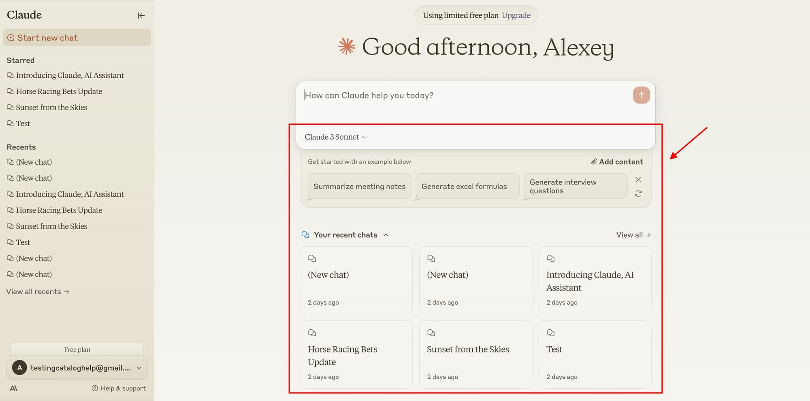

Claude 3.7为设计师提供了前所未有的创意助手体验，从概念构思到实际设计实现，都能提供专业级别的支持。无论是UI/UX设计、品牌设计还是创意概念开发，Claude 3.7都能成为设计师的得力助手。
深入理解设计原则、排版规则、色彩理论和视觉层次结构，能够提供专业的设计建议。
能够根据简单的描述生成丰富的创意概念，提供多样化的设计思路和灵感。
协助创建详细的设计系统和规范文档，确保设计的一致性和可扩展性。
Claude 3.7在UI/UX设计领域提供了全方位的支持，从用户研究到界面设计都能提供专业指导：
Claude 3.7在品牌设计领域也展现出色的能力，能够协助设计师进行品牌策略制定和创意开发：
Claude 3.7能够根据品牌特性和目标受众生成专业的色彩方案：
#3B82F6
主色调
#1E40AF
深色变体
#93C5FD
浅色变体
#F97316
强调色
#1F2937
文本色
Claude 3.7不仅能生成色彩代码，还能提供每种颜色的应用场景建议和无障碍性评估。
Claude 3.7能够协助创建全面的品牌风格指南，包括：
Claude 3.7能够在设计工作流程的各个环节提供支持，提高设计效率：
Claude 3.7可以帮助分析设计需求，整理竞品研究，提取关键洞察，为设计提供坚实基础。
根据需求生成多种创意方向，提供灵感和参考，帮助设计师突破思维局限。
提供详细的设计规范和技术实现建议，包括CSS代码、组件结构和响应式设计方案。
根据设计原则和用户体验最佳实践评估设计，提供有针对性的改进建议。
协助创建专业的设计文档，包括设计说明、技术规范和实现指南，确保设计意图准确传达。
设计师提示技巧
与Claude 3.7合作时，提供具体的设计目标、目标受众和品牌背景信息，能够获得更精准的设计建议。使用专业设计术语描述需求，Claude 3.7能够更好地理解设计意图。
一个设计团队需要重新设计一个拥有复杂功能的电子商务平台。他们使用Claude 3.7来：
结果：设计周期缩短40%，用户满意度提升25%，转化率增加15%。